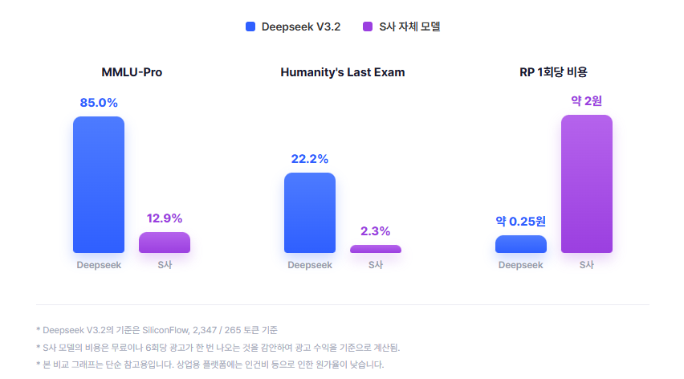

당신의 키로,
당신의 캐릭터와
대화하세요.
MicroZed는 BYOK(Bring Your Own Key) 방식의 캐릭터 채팅 앱입니다. 플롯 · 캐릭터 · 대화 · 로어북 · API 키까지, 모든 데이터가 오직 내 기기에만 저장되고 어떤 서버로도 전송되지 않습니다. Windows 데스크톱과 Android를 지원합니다.
Bring Your Own Key
OpenAI, OpenRouter, Anthropic 호환 게이트웨이 등 원하는 API 키를 직접 등록해서 사용합니다. 중간에 앱이 마진을 붙이지 않습니다.
완전한 로컬 저장
플롯, 캐릭터, 대화 기록, 로어북, API 키 — 모든 데이터가 SQLite로 기기에만 저장됩니다. 운영 서버 자체가 존재하지 않습니다.
완전 오프라인도 가능
llama.cpp 기반 온디바이스 로컬 LLM을 한 번 받아두면, 인터넷 없이도 완전히 기기 안에서만 대화가 이루어집니다.
더 강한 모델을,
더 싼 값에.
광고 기반 앱은 대개 자체 저비용 모델을 돌리고 광고 수익으로 비용을 회수합니다. 반면 BYOK는 DeepSeek V3.2 같은 최신 고성능 모델을 직접 골라 쓸 수 있고, 실제 토큰 사용량만큼만 지불합니다.
아닙니다.

* Deepseek V3.2 기준은 SiliconFlow, 2,347 / 265 토큰 기준 · 비교 대상 모델의 비용은 무료지만 6회당 광고 1회 노출을 감안하여 광고 수익 기준으로 환산 · 본 비교 그래프는 참고용이며 상업용 플랫폼은 인건비 등으로 원가율이 다를 수 있습니다.
파워 유저를 위한 기능들
캐릭터 카드 제작부터 로어북, 오프라인 모델, 백업까지 — 캐릭터 채팅에 필요한 도구를 한 앱에 담았습니다.
플롯 & 캐릭터 제작
여러 캐릭터가 참여하는 플롯을 만들고, 인트로(첫 상황)를 여러 버전으로 작성할 수 있습니다.
플롯 전용 대화 프로필
플롯마다 전용 유저 페르소나를 개수 제한 없이 만들고, 새 채팅 시작 시 스와이프 카드로 선택합니다. VN 전용 스탠딩 이미지도 따로 설정할 수 있고, 전용 형식(.mzprofile)으로 내보내기·가져오기도 지원합니다.
캐릭터와 미니게임
체스·오목·우노·라이어스바를 캐릭터 한 명과 1:1로 즐깁니다. 체스/오목은 난이도 설정, 모든 게임에서 AI 프리셋이 직접 수를 판단하게 하거나 매 수마다 성격에 맞는 대사를 하게 하는 옵션을 켤 수 있습니다.
로어북 (세계관 설정)
키워드가 언급되면 자동으로 AI에게 전달되는 세계관 정보. SillyTavern World Info / JanitorAI 스크립트 가져오기·내보내기 지원.
ZedTalk 메신저 채팅
카카오톡처럼 캐릭터 한 명과 짧고 일상적인 톤으로 주고받는 1:1 채팅 모드. 날짜 구분선과 실시간 시각이 AI 컨텍스트에 반영됩니다.
실시간 스트리밍 채팅
재시도·AI 수정·직접 수정, 답변 버전 넘기기, 번개 버튼으로 다음 답변 후보 3개 추천, 4단계 Reasoning Effort까지.
오프라인 로컬 LLM
llama.cpp 기반으로 Huihui Gemma 4 / Qwen3.5 등 추천 모델을 원탭 다운로드하거나 직접 GGUF 파일을 가져와 완전 오프라인으로 사용합니다.
스냅샷 (장면 이미지 생성)
지금까지의 대화를 AI가 한 문단으로 요약하고, OpenRouter 또는 AtlasCloud로 장면 이미지를 생성해 채팅에 삽입합니다.
장기 기억 (자동 요약)
컨텍스트 길이를 넘는 오래된 대화를 자동 요약해 시스템 프롬프트에 얹습니다. 요약 프롬프트와 전용 프리셋도 직접 설정 가능합니다.
세밀한 AI 프리셋 관리
Base URL, 모델명, Temperature, Top K, Max Tokens, Context Length, 추가 시스템 프롬프트까지 프리셋 단위로 관리합니다.
SillyTavern 호환
SillyTavern 캐릭터 카드를 그대로 가져오고 내보낼 수 있습니다. 새 플롯으로 만들거나 기존 플롯에 병합할지 선택 가능합니다.
백업 & 전용 내보내기
플롯 전용 형식(.mzplot)과 전체 데이터 백업(.mzbackup)으로 손실 없이 내보내고 복원할 수 있습니다.
다국어 & 테마
한국어·영어·일본어를 기본 지원하고, 다크/AMOLED 테마를 제공합니다. 더 많은 언어는 Pull Request로 추가할 수 있습니다.
앱 둘러보기
홈부터 채팅, 플롯 편집, 대화 프로필, AI 프리셋까지.
Flutter로 만든 크로스플랫폼 앱
개발과 테스트는 Windows 데스크톱과 Android를 기준으로 진행됩니다.
Windows
데스크톱 · 지원Android
모바일 · 지원macOS / iOS
실험적 (Flutter 빌드 가능)Linux / Web
실험적 (Flutter 빌드 가능)시작하기
OneStore에서 바로 받거나, 소스를 직접 빌드해서 사용할 수 있습니다.
지금 바로 사용하기
OneStore(Android)에서 MicroZed를 설치하세요. 사용을 시작하려면 OpenAI 호환 API 키가 필요합니다.
OneStore에서 다운로드소스에서 직접 빌드하기
Flutter SDK(stable)와, Windows라면 Visual Studio 2022(C++ 워크로드)가 필요합니다.
# 1. 의존성 설치 flutter pub get # 2. 코드 생성 (Drift DB 등) dart run build_runner build # 3. 실행 (Windows 데스크톱) flutter run -d windowsGitHub 저장소 보기
개인정보, 원칙은 간단합니다
- 운영 서버가 없어 개발자는 어떤 사용자 데이터도 수집·열람할 수 없습니다.
- 모든 데이터는 기기에만 저장됩니다.
- 원격 AI 모델을 쓰면 대화 내용이 사용자가 선택한 제3자 API로 전송됩니다 — 로컬 LLM을 쓰면 그마저도 없습니다.
- 광고, 추적, 분석 SDK가 전혀 없습니다.